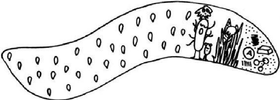
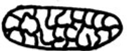
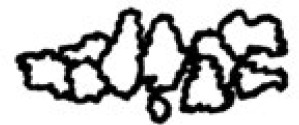

GENTLE READER, it is now time to get down to the nitty-gritty. So, hitch up your suspenders, push your glasses up the bridge of your nose, and take a good gulp of your tea. While maintaining a safe distance, we must now take a closer look at the mysteries of number twos!
COMPONENTS
Many people believe feces are made up mainly of what they have eaten. That is not the case.

Feces are three-quarters water. We lose around 3½ ounces (100 milliliters) of fluid a day. During a passage through our digestive system, some 10 US quarts (9.8 liters) are reabsorbed. What we deliver into the toilet bowl is the result of an absolute maximum level of efficiency. Whatever fluid is left in the feces belongs there. This optimum water content makes our feces soft enough to ensure our metabolic waste products can be transported out of our bodies safely.
A third of the solid components are bacteria. They are gut flora that have ended their careers in the digestive business and are ready to retire from the workplace.
Another third is made up of indigestible vegetable fiber. The more fruit and vegetables you eat, the more feces you excrete per bowel movement. Increasing the proportion of that food group in the diet can raise the weight of a bowel movement from the average 3½ to 7 ounces (100 to 200 grams) to as much as 17 or 18 ounces (500 grams) per day.
The remaining third is a mixed bag. It is made up of substances that the body wants to get rid of—such as the remains of medicines, food coloring, or cholesterol.
COLOR
The natural color of human feces ranges from brown to yellowish-brown—even when we have not eaten anything of this color. The same is true of our urine—it always tends toward yellow. This is due to a very important product that we manufacture fresh every day: blood. Our bodies create 2.4 million new blood corpuscles a day. But the same number are broken down every day, too. In that process, the red pigment they contain is first turned green, then yellow. You can see the same process in the various stages of a bruise on your skin. A small portion of this yellow pigment is excreted in your urine.
Most of it, though, passes through the liver and into the gut. There, bacteria change its color once again—this time turning it brown. Examining the color of feces can provide a useful insight into the goings-on of our gut.
LIGHT BROWN TO YELLOW: This color can be the result of the harmless disorder called Gilbert’s syndrome (or Gilbert-Meulengracht syndrome). In this condition, one of the enzymes involved in the breakdown of blood works at only 30 percent of its normal efficiency. This means less pigment finds its way into the gut. Affecting around 8 percent of the world’s population, Gilbert’s syndrome is relatively common. This enzyme defect is not harmful, causing barely any problems for those who have it. The only side effect is a reduced tolerance for acetaminophen, which should be avoided by those with Gilbert’s syndrome.
Another possible cause of yellowish feces is problems with the bacteria in the gut. If they are not working as they should, the familiar brown pigment will not be produced. Antibiotics or diarrhea can cause such an alteration in fecal color.
LIGHT BROWN TO GRAY: If the connection between the liver and the gut is blocked by a kink in the tubes or by pressure (usually behind the gall bladder), no blood pigment can make it into the feces. Blocked connections are never a good thing, and those who notice a gray tint to their feces should consult their doctor.
BLACK OR RED: Congealed blood is black and fresh blood is red. In this case, the color is not due to the pigment that can be turned brown by bacteria, but to the presence of entire blood corpuscles. For those with hemorrhoids, a small amount of bright red blood in the stool is no reason to worry. However, anything darker in color than fresh, bright red blood should be checked by a doctor—unless you have been eating large amounts of beetroot.
CONSISTENCY
The Bristol stool scale was first published in 1997, so it is not very old if you consider the millions of years that feces have existed. The scale classifies the consistency of feces into seven groups. A chart like this can be a useful tool, since most people are reluctant to talk about the appearance of their bowel movements. That’s perfectly natural. There are some aspects of private life we prefer not to rub other people’s noses in! But such a reticence to talk about what we find in the toilet bowl means that people with unhealthy looking feces are often unaware of it. They think everybody’s business looks like their own. A healthy digestive system, producing feces with the optimum water content, will produce types 3 or 4. The other types are less than ideal. If they do appear, a good doctor should be able to find out whether your loose stool or constipation is the result of a food intolerance, for example. The chart was developed by Dr. Ken Heaton at the University of Bristol in the United Kingdom.
TYPE 1
Separate hard lumps, like nuts (hard to pass)
TYPE 2
Sausage-shaped, but lumpy

TYPE 3
Like a sausage but with cracks on its surface
TYPE 4
Like a sausage or snake, smooth and soft (author’s note: like toothpaste)
TYPE 5
Soft blobs with clear-cut edges (passed easily)

TYPE 6
Fluffy pieces with ragged edges, a mushy stool
TYPE 7
Watery, no solid pieces, entirely liquid
The type a person’s feces belong to can be an indication of how long indigestible particles take to pass through their gut. According to this, in Type 1 digestive remains take around one hundred hours to pass through the system (constipation). In Type 7, they pass through in just ten hours (diarrhea). Type 4 is considered the ideal, because it has the optimum ratio between fluid and solid content. Those who find types 3 or 4 in the toilet bowl may also want to observe how quickly their feces sink in water. Ideally, they should not plummet straight to the bottom, as this would indicate the possibility that they still contain nutrients that have not been digested properly. Feces that sink slowly contain bubbles of gas that keep them afloat in water. These gas bubbles are produced by gut bacteria that mostly perform useful services. So this is a good sign, as long as it is not accompanied by flatulence.
THESE HAVE BEEN a few selected facts about feces, gentle reader. You can now loosen your suspenders and let your glasses slide back down your nose to where they are most comfortable. Here endeth the first chapter of the story of the gut and its goings-on. We now turn to an electrifying topic: the nerves.